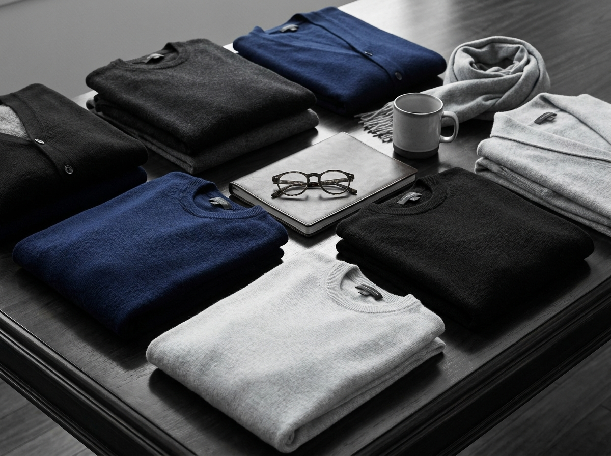

Style Guide: The Power Suit
Elevate your professional presence with confident tailoring, sharp fit, and refined suit details.
Read MoreAUGUSTUS Journal
Romantic silhouettes, quiet elegance, and practical styling guides for building a gentle wardrobe. Explore our editorial stories and find looks you can wear every day.
Elevate your professional presence with confident tailoring, sharp fit, and refined suit details.
Read More
Use intentional color palettes, romantic fabric choices, and versatile staples to create the dreamy soft girl look in a realistic way.
Read More
Build a refined knitwear rotation with fine-gauge layers, smart sweaters, and clean proportions for men.
Read More
Understanding custom tailoring, fabric selection, fittings, and the details that make a garment personal.
Read More
Choosing the perfect pair for every occasion, from oxfords to loafers.
Read More
Refine your outfits with proportion, color restraint, and subtle accessories so each look feels polished, emotional, and never overdone.
Read More